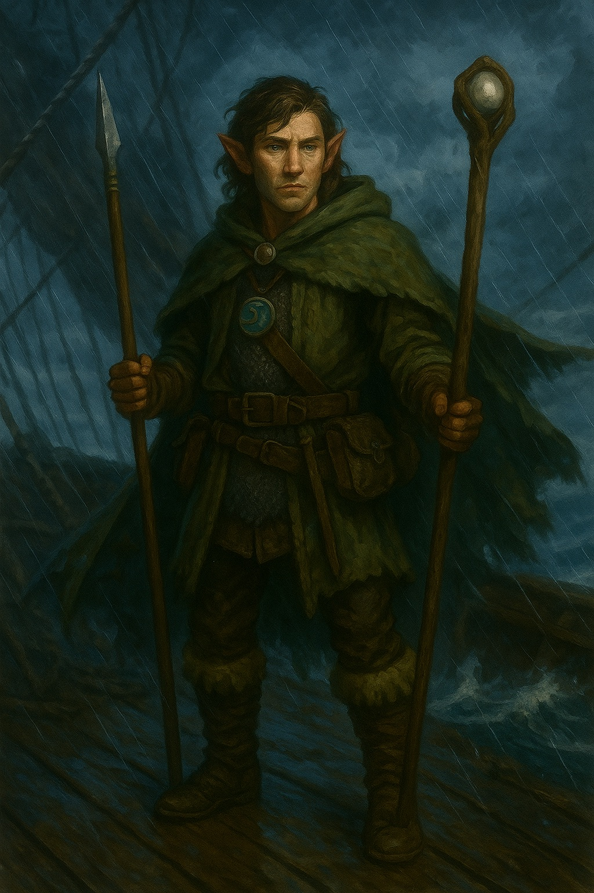
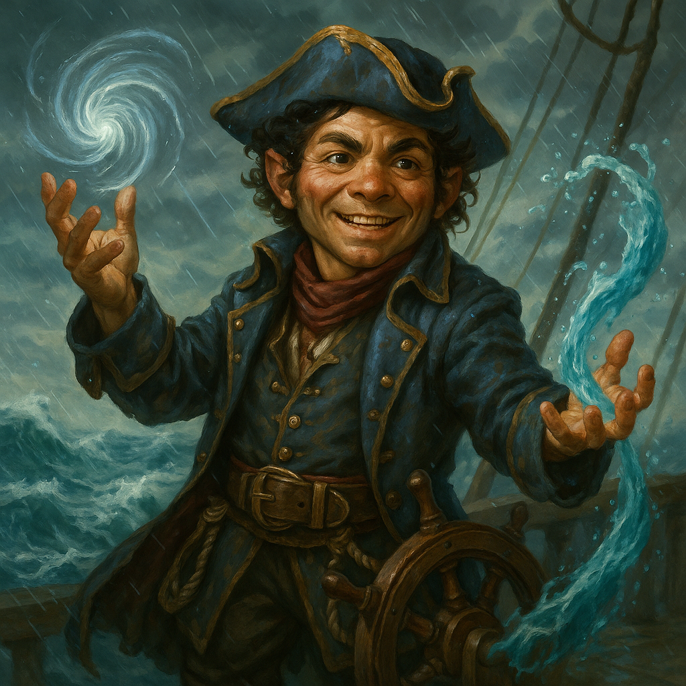

The Crew

Enoril "Eno" Wazek
Half-Elf Nature Cleric of Eldath. Raised in the wilds; adopted by the Greenbottles.

Hal Stormguard
Variant Human Paladin, Oath of Vengeance. Ex-militia of the Silver Marches.

Hisfiz "Fiz" Spinfizzler
Rock Gnome Artificer (Artillerist) from Halruaa. Stole a flying ship to see the world.

Tozlo "Toz" Greenbottle
Lightfoot Halfling Storm Sorcerer. Captain of the lost True Hand; his family adopted Eno as a brother.